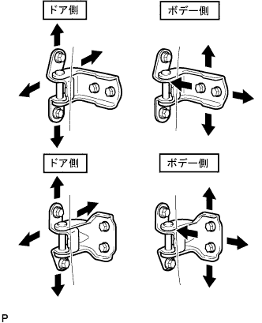

フロントドアRH 調整 |
| 1. フロントドア パネルSUB-ASSY RH点検 |
基準値内であることを点検する。
| 2. フロントドア パネルSUB-ASSY RH調整 |
|  |
ドア前端および上下方向の調整をする場合はSSTを使用し、ボデー側のボルトをゆるめてから行う。
ドア上下方向およびドア前端左右方向の調整をする場合は、ドア側のボルトをゆるめてから行う。
ドア後端左右方向およびフロントドアロックストライカプレートASSYの調整をする場合は、トルクスソケットレンチ(T40)を使用して、ストライカ取り付けスクリューをストライカが動く程度までゆるめ、ブラスバーを使用して、ストライカを軽くたたいて調整する。